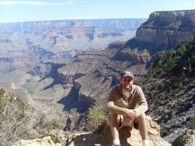

Bio
I am originally Spanish, though I moved with my family to Michigan when I was 12. I attended the University of Michigan for my undergraduate studies, where I majored in physics, math, and philosophy.
After completing my bachelor's degree, I joined the Peace Corps through which I taught secondary school math and physical science in a rural Namibian village. There I attempted (with very limited success) to pick up the local clicking language Khoekhoegowab! It was in these two years that I came to realize how much I enjoy teaching.
After returning, I did my graduate work at Cornell University in Ithaca, New York, working with Joe Burns and Phil Nicholson. I'm now a postdoctoral fellow at the University of Toronto's Centre for Planetary Sciences and the Canadian Centre for Theoretical Astrophysics (CITA). I am interested in all areas of celestial mechanics--find more specifics in the Research section!